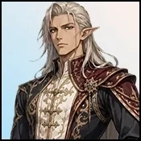

Overview

Coradio teaches Sovereign Edge and appears across three medieval destinations. His named skill lesson is a resource purchase; it does not require a Fighters Guild rank or an additional Ability 60 check.
Where to find them
- Tournament Grounds: odd-numbered days, 07:00–18:00. The skill lesson starts here.
- Fighters Guild: even-numbered days, 12:00–20:00.
- Training Room: odd days 18:00–21:00; even days 20:00–23:00, once the room exists.
Route and relationship milestones
Bring 5 Crystals, 120 Energy and 45 Calm for the 300-minute lesson at Tournament Grounds. It teaches Sovereign Edge once. The full version and extra access in its notice are required.
Optional reference: personal and shared event navigation
Each listed event happens once. Return to the named place after completing its prior steps. Completion affection is a base reward; dialogue choices can add further affection. The scenes and choice answers remain in the game.
| Event | Requirements | Base completion affection |
|---|---|---|
| Coradio at the Training Room | Training Room | Coradio +5 |
Activities and rewards
| Action | Requirements / usable start time | Base cost / recovery | Reward / normal limit |
|---|---|---|---|
| Talk to Coradio | Tournament Grounds / Fighters Guild / Training Room; Stranger (0) | 15 min | +1 base affection; 5/day |
| Sovereign Edge | Tournament Grounds; Stranger (0); odd-numbered days, Tournament Grounds 07:00–18:00; full version; extra supporter-content access shown in the notice | 300 min; 5 Crystals; −120 Energy; −45 Calm | Sovereign Edge; once; +30 base affection on event completion |
Talk is available at all three destinations, but its normal five daily uses are shared. The Training Room introduction is a separate once-only arrival event. See Combat for the skill’s use and Specialist Class for class choices.
Start windows exclude their ending hour. Listed time and resources are base values; applicable skills, difficulty and active bonuses can change the shown cost or affection. Base affection, direct affection, player Erotic Experience and NPC intimacy experience are separate.
What usually blocks the next step
- If you see him at the Guild or Training Room, wait for an odd day and visit Tournament Grounds for the lesson.
- Already knowing Sovereign Edge hides the one-time lesson.
- Crystals are spent by the lesson; they are not merely an ownership threshold.
概览
Coradio 教授王权锋刃，并在三个中世纪地点活动。这项指定课程按资源付费，不要求战士公会阶级，也没有额外的能力 60 检查。
在哪里找到
- 锦标赛场地：奇数日 07:00–18:00，技能课程从这里开始。
- 战士公会：偶数日 12:00–20:00。
- 训练室：房间建好后，奇数日 18:00–21:00、偶数日 20:00–23:00。
路线与关系节点
前往锦标赛场地学习时，需准备 5 水晶、120 精力与 45 镇定，耗时 300 分钟，一次性学会王权锋刃。还需完整版及进入提示所列的额外内容权限。
可选查阅：个人与共同事件的触发条件
下列事件均为一次性内容。完成前置后，请返回对应地点。完成好感度列为基础奖励，对话选择还可能追加好感度。剧情与选项答案请在游戏中体验。
| 事件 | 条件 | 完成基础好感度 |
|---|---|---|
| Coradio 在训练室 | 训练室 | Coradio +5 |
行动与奖励
| 行动 | 条件／可开始时间 | 基础消耗／恢复 | 奖励／常规次数 |
|---|---|---|---|
| 与 Coradio 交谈 | 锦标赛场地／战士公会／训练室; 陌生人 (0) | 15 分钟 | +1 基础好感度; 5次/日 |
| 王权锋刃 | 锦标赛场地; 陌生人 (0); 奇数日，锦标赛场地 07:00–18:00; 完整版; 进入提示所列的额外支持者内容权限 | 300 分钟; 5 水晶; −120 精力; −45 镇定 | 王权锋刃；一次性; +30 事件完成基础好感度 |
三个地点都可交谈，但合计共用每天 5 次的常规次数。训练室介绍是另一个一次性到访事件。技能用法见战斗指南，职业选择见专精职业指南。
开始时段不包含结束整点。表中耗时与资源为基础值；适用技能、难度及当前加成可能改变界面显示的消耗或好感度。基础好感度、直接好感度、玩家情欲经验与 NPC 亲密经验分别计算。
常见卡点
- 若在公会或训练室见到他，学习课程仍需等到奇数日并前往锦标赛场地。
- 已经学会王权锋刃后，一次性课程会隐藏。
- 课程会消耗水晶，并非只要求持有。
Adapted and updated from the community Chronoromancer Wiki. Community source and history · CC BY-SA 4.0. Game images © Chronoromancer Studio.